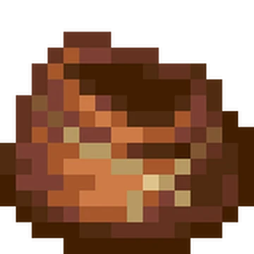
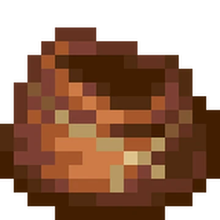

Bundle / Sac
 

Sac rempli
Sac vide
- Un nouvel objet qui permet de regrouper différentes sortes d’objets dans une même pile.
- Les objets peuvent être insérés directement dans l’inventaire du sac.
- Il est possible de retirer un objet en le sélectionnant dans l’infobulle. Un clic droit permet de prendre le premier objet visible, tandis que la molette de la souris permet de changer la sélection.
- En main, un sac peut être vidé au sol en effectuant un clic droit ou en maintenant le clic droit.
- Les sacs se fabriquent avec une ficelle et un cuir.
- Les commandes de manipulation des sacs ont été mises à jour : un clic gauche permet d’ajouter un objet, un clic droit permet de retirer l’objet du haut de la pile, et la molette de la souris permet de changer l’objet sélectionné dans l’infobulle.
Le craft du sac dans Minecraft : un cuir et une ficelle.
Personnalisation
- Les sacs peuvent être teints en 16 couleurs différentes. Une fois teint, un sac ne peut pas être déteint avec un chaudron rempli d’eau.
Règles de stockage
- Les objets qui se stockent par stack de 16 occupent plus de place dans un sac, tandis que les objets non stackable prennent tout l’espace.
- Un sac peut contenir jusqu’à 64 objets, mais ils peuvent être de différents types.
- Le sac affiche un aperçu du contenu via une infobulle. Si le sac contient moins de 12 types d’objets, ils seront tous visibles. Au-delà, seules les trois premières lignes (au moins 8 types) seront affichées.
- Les boîtes de Shulker ne peuvent pas être placées dans un sac.
- Les sacs peuvent être placés dans d’autres sacs, mais cela occupe 4 emplacements, plus le nombre d’emplacements déjà utilisés par le sac intérieur.
 1.21.2
1.21.2